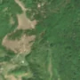
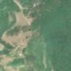

2,9 ha de pădure schimbată lângă Lugașu de Sus
Între vara lui 2025 și 25 aprilie 2026, pe aproximativ 2,9 ha de pădure din comuna Lugașu de Jos, lângă Lugașu de Sus, județul Bihor, imaginile Sentinel-2 arată că vegetația a dispărut sau s-a schimbat puternic. E o schimbare care merită verificată.
Autorizația de tăiere
pășune, nu pădure
Analistul nu vede pădure tăiată: înainte era pășune, fâneață sau teren cu copaci răzleți și tufăriș, nu pădure închisă. Dacă s-au scos copaci de pe pășune, și asta cere autorizație de la ocolul silvic (Codul silvic, art. 60), dar aceste autorizații nu apar sigur în registrul public, așa că nu putem spune dacă există. Nu e dovadă de ilegalitate.
Ce se vede în poze: În poza detaliată zona marcată este mai ales o poiană cu iarbă și doar câțiva copaci răzleți, nu o pădure deasă. În «înainte» și «după» poiana arată aproape la fel, deci nu se vede o tăiere de pădure, cel mult o schimbare pe pășune.


Înainte și după: Copernicus Sentinel-2, 10 m pe pixel, conturul zonei cu portocaliu. Poza detaliată (Esri World Imagery) e de acum 1–4 ani: arată ce era acolo înainte, nu tăierea.
Pe scurt
- Identificator
- 20260425_47084_22368
- Locul
- Lugașu de Sus, comuna Lugașu de Jos, județul Bihor (SIRUTA 29902)
- Coordonate (centru)
- 47.08368, 22.36827 · Google Maps · OpenStreetMap
- Suprafața
- 2,9 ha (din pixeli de 10 m; ± câțiva pixeli pe margine)
- Pădurea întreagă
- în vara lui 2025 (de atunci, nori sau iarnă)
- Prima imagine cu schimbarea
- 25 aprilie 2026
- Imagini în care se vede schimbarea
- 5
- Cât de sigur e semnalul din satelit
- scăzută
- Autorizația cea mai apropiată
- APV 2600151001880 · Ocolul Silvic Aleșd, la 431 m de zonă
- Terenul
- în afara amenajamentelor silvice publicate (pășune, mal de apă sau pădure privată fără amenajament în registru)
- Arie protejată
- Muntele Șes
- Garda Forestieră
- Oradea
Dacă vrei să verifici sau să sesizezi
- Pădurile din județul Bihor sunt în grija Gărzii Forestiere Oradea, care controlează tăierile și dă amenzile.
- Autorizația găsită în zonă e emisă de Ocolul Silvic Aleșd.
- Formularul Gărzii Forestiere Naționale primește sesizări și fără nume. Trimite linkul acestei pagini, coordonatele și pozele. Dacă tăierea e în desfășurare, sună la 112.
- Autorizațiile și transporturile de lemn se pot căuta în Inspectorul Pădurii.
Pagina arată ce se vede din satelit și ce scrie în registrul public; nu e o dovadă în sine.
Din alte surse
- presă (probabilă): Știre despre tăieri la Lugașu de Sus, Bihor, 23.09.2026: „Masacru forestier la Lugașu de Sus: 171 de arbori tăiați ilegal, patru suspecți au fost reţinuţi - Bihoreanul” Menționează ilegalitate, autorizații sau Garda Forestieră. sursa
- presă (probabilă): Știre despre tăieri la Lugașu de Sus, Bihor, 23.09.2026: „Patru bărbați din Lugașu de Sus, reținuți după ce ar fi tăiat și furat 171 de arbori. Prejudiciul depășește 39.000 de lei - AlesdOnline” Nu e sigur că e vorba de aceeași tăiere. sursa
- presă (probabilă): Știre despre tăieri la Lugașu de Sus, Bihor, 23.09.2026: „Patru bărbați din Lugașu de Sus, reținuți într-un dosar de furt de material lemnos. Prejudiciul depășește 39.000 de lei - bihon” Nu e sigur că e vorba de aceeași tăiere. sursa
- presă (probabilă): Știre despre tăieri la Lugașu de Sus, Bihor, 23.09.2026: „Patru bărbați au tăiat și vândut 171 de arbori nemarcați din pădurea din Lugașu de Sus - Hoți de lemne arestați - Crisana” Nu e sigur că e vorba de aceeași tăiere. sursa
Cum citezi zona
Linkul acestei pagini nu se schimbă. Dacă zona iese vreodată de pe hartă, pagina rămâne, cu data și cu ce știam despre ea.
Pădurea RO, zona 20260425_47084_22368: 2,9 ha, Lugașu de Sus, comuna Lugașu de Jos, județul Bihor; schimbare văzută din satelit între vara lui 2025 și 25 aprilie 2026. https://iliemihai.github.io/padurea-ro/zona/20260425_47084_22368/ (consultat la [data]). Date: CC BY 4.0.
Datele zonei: GeoJSON · toate zonele: date deschise · licența CC BY 4.0.
Istoricul zonei pe hartă
Starea se poate schimba când registrul publică o autorizație sau când analistul vede poze mai bune. O ținem aici, ca un link citat să arate și ce spuneam atunci.
Pe hartă cel târziu din 5 noiembrie 2026.
- 5 noiembrie 2026 – azi · pășune, nu pădure
Detalii tehnice, pentru verificare
De ce acest nivel de încredere:
- văzută schimbată în 5 imagini diferite
- pădurea din jur e neschimbată
- ultima dată am văzut-o intactă în vara lui 2025 (de atunci, nori sau zăpadă)
- fără părerea AI
Ce a văzut analistul cu context: În imaginea detaliată din 2020 conturul acoperă o pajiște cu arbori izolați, iar pădurea densă rămâne doar pe marginea de sus și din dreapta; defrișările liniare din apropiere sunt în afara conturului. În Sentinel-2 petele de sol/iarbă uscată sunt similare în 2025 și 2026, fără margini noi clare. Codul WorldCover (96% copaci) și ghidajul automat «pădure închisă» contrazic imaginea, dar coronamentul din 2000 (26%) și lipsa suprapunerii cu vreo autorizație (APV la 431 m) susțin interpretarea de pășune.
- Placa Sentinel-2
- 34TET
- NDVI de referință
- 0.83
- NBR de referință
- 0.55
- Scăderea în pădurea din jur
- 0.03
- Persistență
- 0.89
- NDVI / NBR după
- 0.609 / 0.312
- Analistul cu context (model)
- pasune · 0.55
Cum se calculează fiecare: metodologia.
Pune harta zonei într-un articol
Copiază codul în articol (merge în majoritatea site-urilor de știri). Sau pune doar linkul: WhatsApp, Facebook și X arată singure poza zonei.